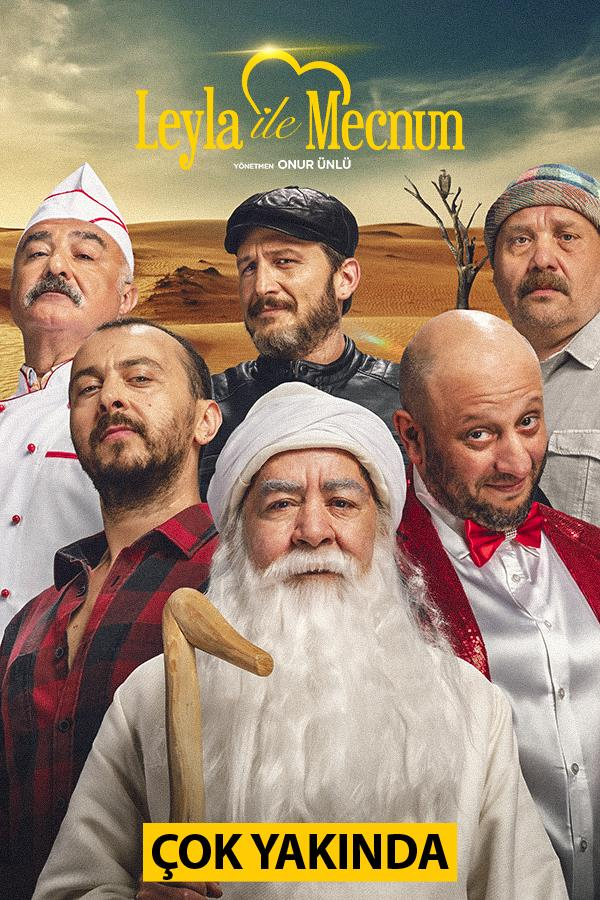

Yusufcan Elbeyli
Hakkımda
Herkese merhabalar, ben Yusufcan Elbeyli. Front-End Developer olmak için çıktığım bu yolda eğitimlere Patika üzerinden devam ediyorum. Bu eğitim süresi boyunca bizlerden desteğini esirgemeyen değerli Patika ekibine ve Hakan Yalçınkaya hocamıza sonsuz teşekkür ve minnetlerimi iletiyorum...
İzlemekten Keyif Aldığım Dizi ve Filmler
- Diziler
- Filmler

Kendimi Geliştirmek İstediğim Yazılım Dilleri
Html, Css, JavaScript, Tailwind, Bootstrap, jQuery, React, Nodejs, Express.js, MongoDB